Duas histórias da Alura
Atualizamos nosso monolito de Spring Boot 2 para 4 em questão de horas, com milhares de arquivos sendo alterados sem problemas.
Nosso dev portal, vibe codado 100%, duplicava envio de e-mail.
Engenharia de software foi pensada com o humano no centro e como recurso caro; precisamos redesenhar tudo.
1 · A nova profissão
Gergely Orosz · The Product-Minded Software Engineer
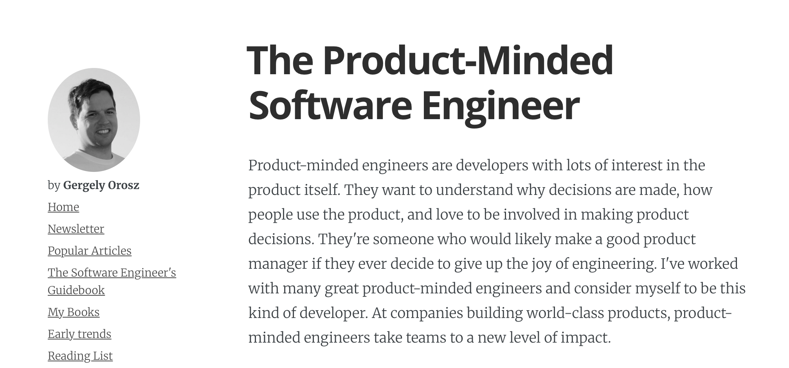
O julgamento aparece nas decisões
O conhecimento técnico continua necessário para avaliar as escolhas.
Malte Kosub · Parloa
O dev decide como estruturar o sistema, reflete sobre trade-offs, e garante que a arquitetura sustenta a escala que o negócio exige.
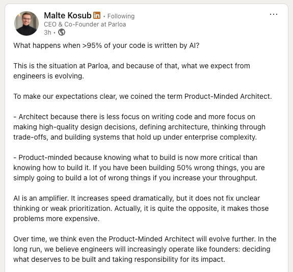
Especifica o que precisa ser feito, dá contexto aos agentes e define como verificar o resultado.
Desenvolve a fábrica.
Vamos falar sobre isso mais pra frente!
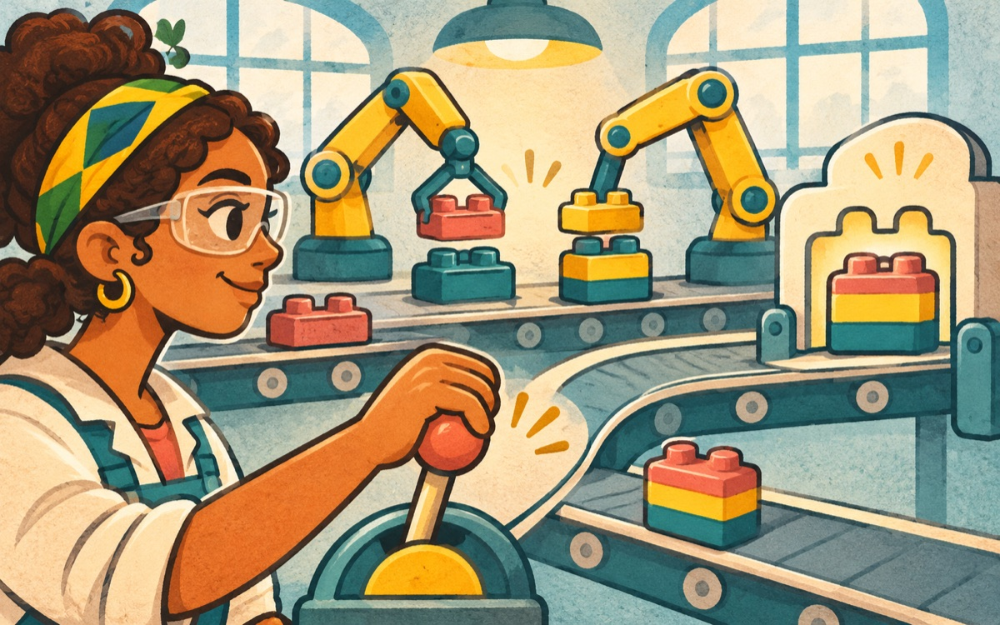
Polêmico!
2 · Revisão de código
Minha aposta
Isso vai doer mais do que quando paramos de escrever código na mão!
O gargalo de hoje
Uber e outras big techs, que largaram na frente, ainda revisam código.
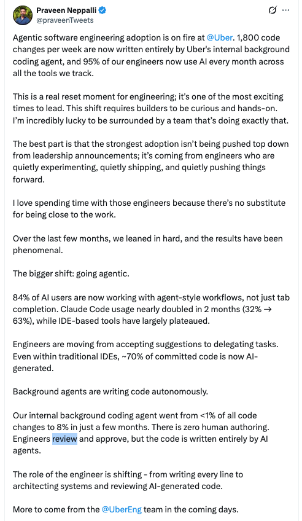
Minha experiência na Alura
Não adianta aumentar a produção em 3.5x se eu não entrego tudo isso pro meu usuário!
Rachel Laycock · Revisão por exceção
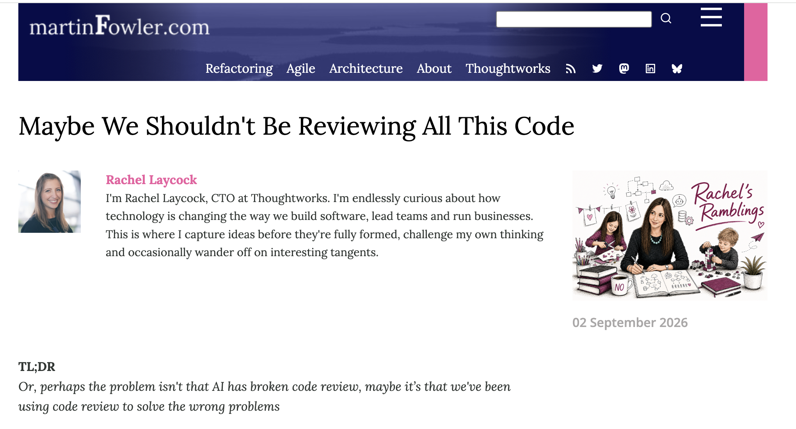
Se os agentes escrevem e mantém o código, será que humanos ainda precisam entender linha por linha?
Kent Beck · Código e confiança
Precisamos acelerar a velocidade com que criamos confiança no código.
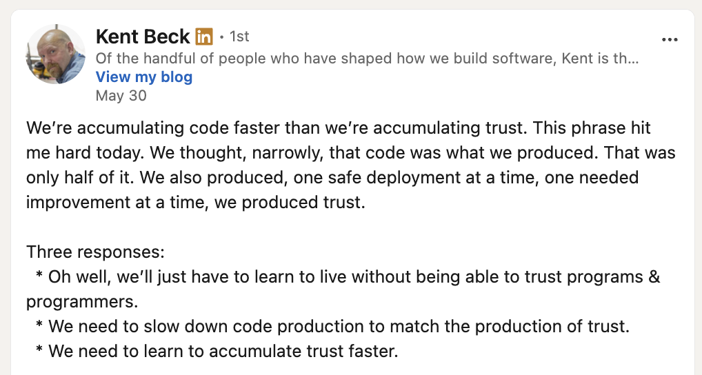
Revisão por exceção
100% → 80% → 50% → 30% → 20% → 0% (sonho!)
Mas para isso precisamos de guardrails!
Guardrails para a entrega
A autonomia dos agentes precisa crescer junto com nossa capacidade de verificar o que eles entregam.
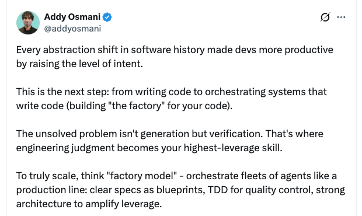
Estratégia de testes
À medida que os agentes assumem mais da implementação, o time precisa de evidências de que o sistema, como um todo, entrega o que o usuário espera.
Dax Raad e Gergely Orosz · Dívida técnica
Humanos sofriam com dívida técnica; mas e máquinas?
Será que essa dívida vai ser cobrada no futuro? Ou será que "não existe" mais dívida técnica?
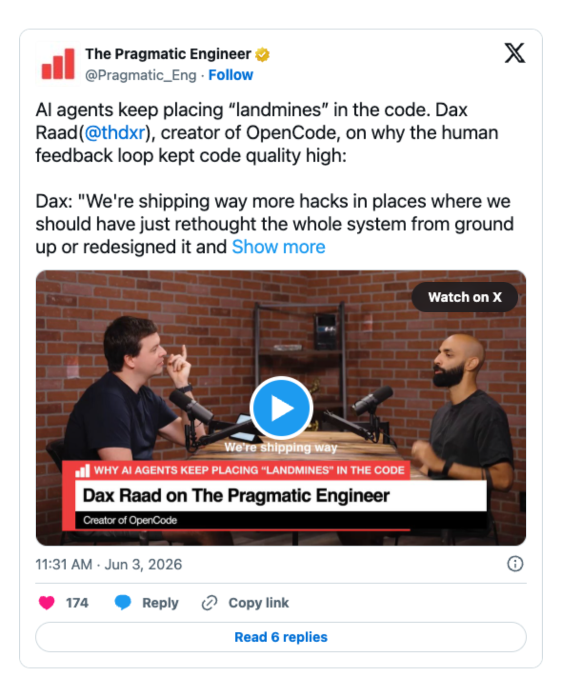
Na conversa com Dax Raad, os autores discutem como delegar a implementação pode enfraquecer o desconforto associado à dívida técnica.
Síntese em português a partir do meu artigo.
AI slop · Tobi Lütke, CEO da Shopify
O agente gera o código. O autor repassa sem testar. Sobra para o revisor descobrir se funciona. Os famosos "slop grenades".
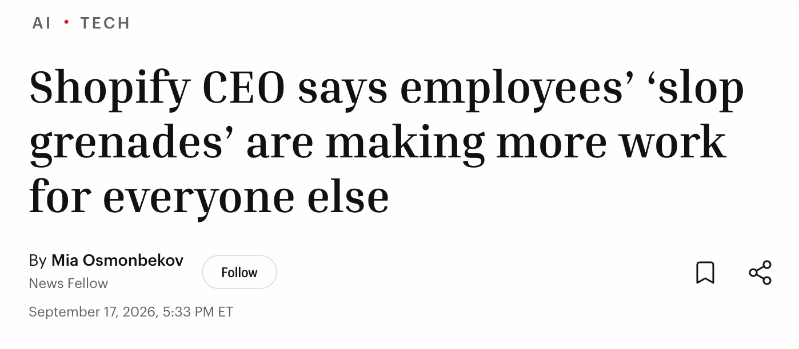
3 · Incidentes
Chris Evans · incident.io
O tipo de incidente mudou. Não é mais erro de lógica, mas sim problemas de integração que só acontecem em produção.
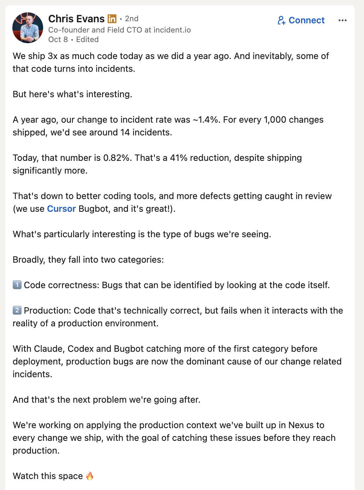
Boris Cherny · O que os modelos ainda erram
Menos erros locais de lógica.
Mais atenção a design do sistema, usabilidade e contexto amplo.
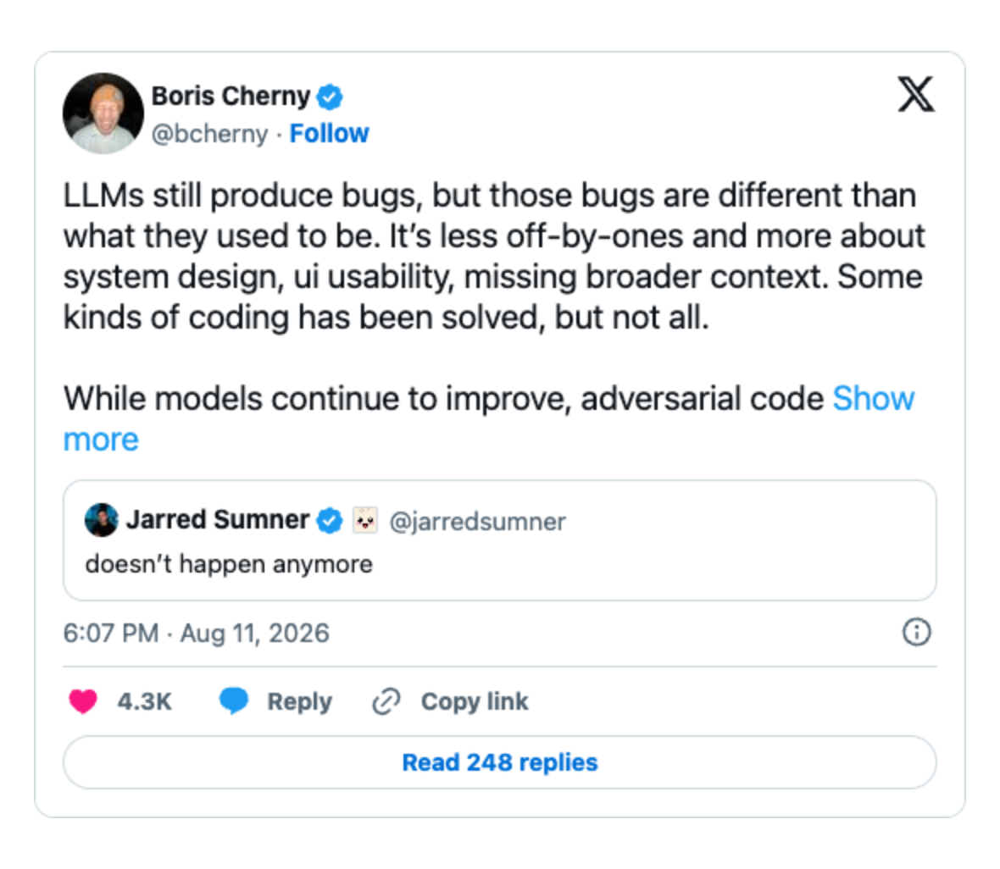
Os bugs observados pelo autor se deslocam de erros locais para decisões de sistema, interface e falta de contexto.
Síntese em português a partir do meu artigo.
Operação
4 · Fábrica de software
The Pragmatic Engineer · Dentro da OpenAI
A fábrica cria software.
O dev cria a fábrica.
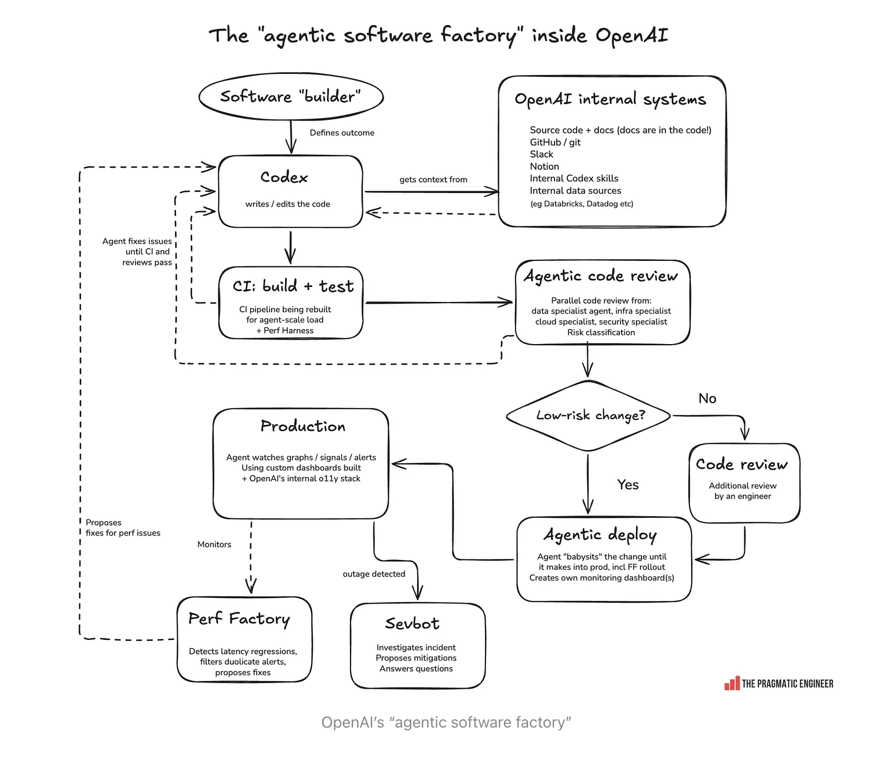
O papel do humano na operação da fábrica
5 · Formação e produto
Uma pergunta ainda aberta
Se julgamento e intuição ficaram mais importantes, onde as pessoas vão desenvolvê-los?
Produto
Usabilidade, bom gosto, atenção aos detalhes são diferenciais.
Maurício Aniche · Encontro CIO FIAP RJ
Precisamos redesenhar o SDLC inteiro se quisermos realmente aproveitar o ganho de produtividade da IA.
Você está pronto para liderar essa transformação na sua equipe?
Apoio · Uma posição diferente sobre revisão
Robert C. Martin descreve acompanhar cobertura, estrutura de dependências, complexidade e testes de mutação.
Minha leitura: cada sinal tem limites. A questão é demonstrar que o conjunto de verificações detecta os defeitos relevantes.
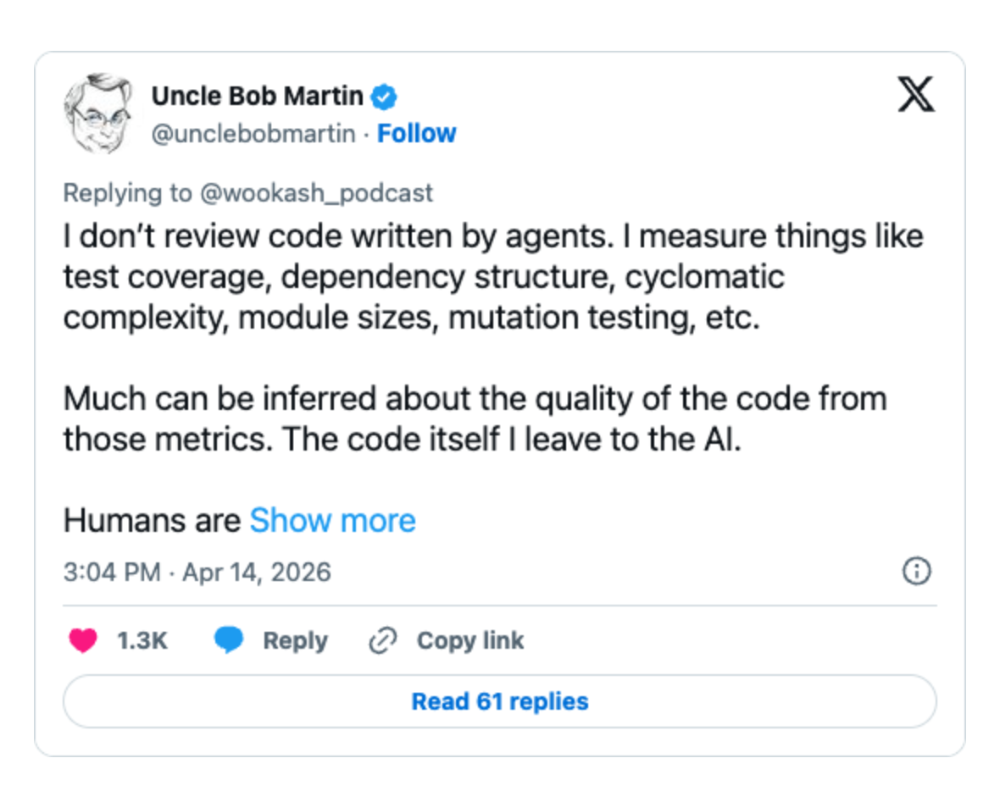
O autor descreve deixar o código com os agentes e acompanhar propriedades da implementação por métricas e testes.
Síntese em português a partir do meu artigo.
Apoio · Imprint
No relato inicial, cerca de 10% das mudanças se qualificavam.
Apoio · Instruções e restrições
Descrevem convenções, exemplos, comandos e cuidados.
Podem falhar ou não ser seguidas.
Testes, contratos, regras de dependência e permissões restringem o que pode passar.
Também precisam de manutenção e avaliação.
A escolha depende da propriedade que queremos preservar e do custo de uma falha.
Apoio · Testando a própria fábrica
| Dimensão | O que observar |
|---|---|
| Resultado | A tarefa terminou com o efeito esperado? |
| Efeitos colaterais | Algo mudou quando não deveria? |
| Trajetória | As ações respeitaram as restrições? |
| Confiabilidade | Com que frequência acerta ao repetir? |
| Eficiência | Quanto custou em tempo e recursos? |
Apoio · Leituras para aprofundar
Apoio · Leituras para aprofundar